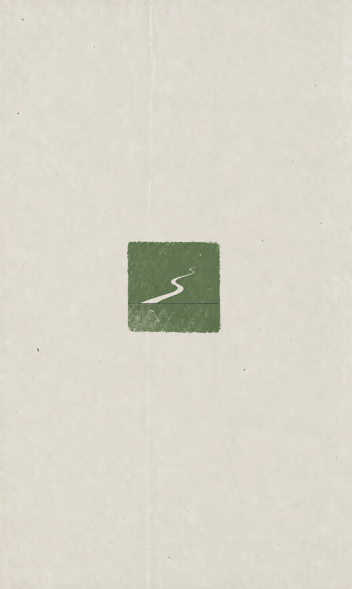

Bring your materials
Bookings, links, scattered notes,
and the things you have already decided.

Scattered plans / a roadbook for the way
Open the Kumano roadbook ↗ Or, see it in use ↓Four people. Six days.
From cedar forests and stone steps to Tokyo,
with flights, transfers and daily plans close at hand.
RouteFrom the whole journey to a particular place.
DaysOpen each day for plans and places to stay.
TransportFlights, time zones and connections along the way.
ChecklistTick things off. Progress stays in this browser.
The film shows the opening, route, daily plans and transport. Try the checklist in the full roadbook.
Bookings, links, scattered notes,
and the things you have already decided.
Dates, places, connections and tasks.
Make the unknowns visible.
Preview it on your phone and refine it.
Check what is public before sharing.
Use the Agent Skill and local commands in the repository. This page does not collect bookings or private materials.
These fictional trips are starting points for the lightweight template. The Kumano roadbook is a separate, custom-built work.
Open the repository in Claude Code or Codex, put your materials in input/, and say:
Use the travel skill to turn these materials into my roadbook.
Identify the missing information, then build a website I can preview.
git clone https://github.com/clarkchenkai/travel.skill
cd travel.skill
npm run new -- europe-rail
npm run devThe lightweight template needs Node.js 20+. Review the content and audience before publishing.